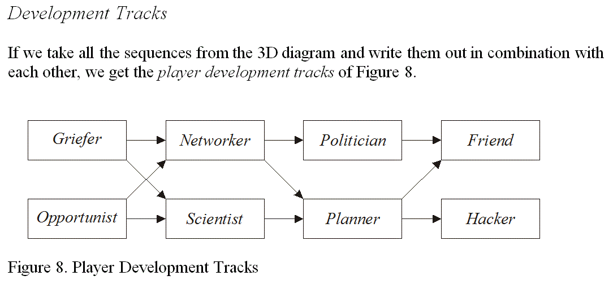
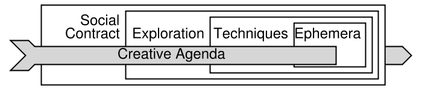

achiever
One of the four player types that results when the implicit/explicit
axis of Richard Bartle's 3D Player Types model is collapsed. (See the
document
"Virtual Worlds: Why People Play" Introduction
by Richard Bartle.) Achievers are in the World/Active quadrant, and
therefore feel most rewarded when their accomplishments are validated
within the structure and rules of the game universe itself. In other
words, they prefer to win games in the most traditional sense of the
word "win". Compare to
explorer,
killer, and
socializer.
Bartle Ladder, the
Bartle Ladder, the - My own term for the roughly ladder-like
structure that results when the most common paths followed by players
are overlapped onto Richard Bartle's 3D Player Types model. (See the
article
"Virtual Worlds: Why People Play" Introduction
by Richard Bartle.)

Bartle Path, the
My term for the four-point path that results when the most common paths
followed by players are overlapped onto Richard Bartle's 3D Player Types
model, as for the
Bartle Ladder
, and then the model is collapsed along the Players/World axis. (See the
"Virtual Worlds: Why People Play" Introduction
by Richard Bartle.) Descriptions of each of the terms "
seeker
", "
learner
", "
doer
", and "
master
" are found elsewhere in this Glossary.html.
Big Model, the
Built by Ron Edwards, the Big Model suggests that the layers of a
particular instance of a role playing game are rather like an onion, with
each layer being encapsulated within another. The four recognized layers
are:
Social Contract
(outermost),
Exploration
,
Techniques
, and
Ephemera
(innermost). The model also recognizes three modes of play, called
Creative Agendas
, which are:
Gamism
,
Narrativism
,
Simulationism
. The four layers are treated as the medium, while the Creative Agenda is
the ultimate point of playing, that the players want to express using that
medium. I believe the example given on
The Forge
is of a painter, though I can no longer find it. The choice of what the
subject should be for the painting is the painter's Creative Agenda. The
colours and brushes and canvas he chooses are his medium. Some choices of
medium are better than others for expressing any given subject.

Also see
http://en.wikipedia.org/wiki/The_Big_Model
creative agenda
doer
ephemera
The moment-to-moment events that take place during a roleplaying game;
e.g. the dice rolled, tables checked, and sentences spoken. Any given
technique
consists of a string of one or more ephemera.
exploration
Distinct from the player type
"explorer"
, all participation in role playing games ultimately involves a certain
amount of exploration, usually of the
shared imagined space
. (The
system
can also be explored.) It is collectively created and shared among the
players and
game master
. It comprises the meat of what people typically mean when they talk about
traditional role-playing. There is emphasis on the fact that the shared
imagined space is created collectively, with input from all players.
Without this layer, the activity might more aptly be called story-telling
or fiction-building.
explorer
Distinct from
"exploration"
, the explorer is one of the four player types that results when the
implicit/explicit axis of Richard Bartle's 3D Player Types model is
collapsed. (See the
"Virtual Worlds: Why People Play" Introduction
by Richard Bartle.) Explorers are in the World/Interactive quadrant, and
therefore feel most rewarded when learning about and mastering the game
universe, in the sense of becoming "good at" the game, even
though the actual played character may not be powerful. Compare to
achiever,
killer, and
socializer.
friend
As a player type, friends' avatars exist in the virtual or imagined
world, but players who fall into this category focus more on interacting
with the other players behind the avatars. On the 3D Player Types model
presented in Richard Bartle's article
"Virtual Worlds: Why People Play" Introduction
, friends are in the Implicit, Players, Interacting octant.
Fruitful Void, the
A term originally coined by Vincent Baker of
http://www.lumpley.com
, the Fruitful Void is the collection of emergent attributes of a
tabletop RPG. The Fruitful Void defines what a given tabletop game is
"about" in the most meaningful sense. In a similar way,
Shakespeare's "Romeo and Juliet" is involves two particular
lovers and their quarrelling families but is about the turmoil felt by
the lovers having to choose between each other and their senses of duty
to their respective families. In a tabletop RPG, this Fruitful Void may
not correlate with the game designers' intended experience depending on
how well they build the game. For example, a game designer may base a
game upon Romeo and Juliet with the intention of evoking the same
emotional turmoil in the players (i.e. a
Narrativist
creative agenda, but if the Romeo character scores "experience
points" for killing Capulets, it may result in a purely
Gamist
game.
game master or GM
The game master basically runs the physics of the shared-imagined
universe and controls all the non-player characters. In many cases, the
GM also acts as a game referee, deciding whether or not a PC's actions
violated any
rules
.
Gamism; a gamist
Gamism is one of the three major modes of play (i.e.
Creative Agendas
) recognized in the
Big Model
. Although
immersion
in the fantasy world is important, the primary focus of this mode is on
the competition between real players of the game. A gamist is a player
who prefers this mode of play, though the
Big Model
does not recognize the possibility that players may change types over
time. See
"Gamism: Step On Up"
by Ron Edwards.
griefer
A griefer is a player who acts on other players with no specific goals
in mind beyond, usually, the intention usually to hurt or help. This is
the beginning state of players who are new to the game but prefer to
focus on the other participants in the game rather than the virtual or
imagined world. On the 3D Player Types model presented in Richard
Bartle's article
"Virtual Worlds: Why People Play" Introduction
, griefers are in the Implicit, Players, Acting octant.
hacker
A hacker is a player who is more interested in experimenting with the
boundaries and rules of the virtual or imagined game world than anything
else. On the 3D Player Types model presented in Richard Bartle's article
"Virtual Worlds: Why People Play" Introduction
, hackers are in the Implicit, World, Interacting octant.